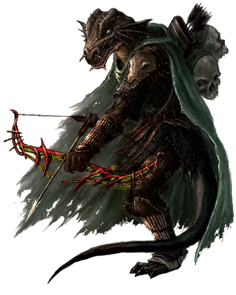

Dragonborn
Dragonborn look very much like dragons standing erect in humanoid form, though they lack wings or a tail.
Racial Traits
+2 Strength, +1 Charisma, Draconic Ancestry, Breath Weapon, Damage Resistance

Dragonborn look very much like dragons standing erect in humanoid form, though they lack wings or a tail.
+2 Strength, +1 Charisma, Draconic Ancestry, Breath Weapon, Damage Resistance
Bold and hardy, dwarves are known as skilled warriors, miners, and workers of stone and metal.
+2 Constitution, Darkvision, Dwarven Resilience, Dwarven Combat Training, Stonecunning
To be greeted with stares and whispers, to suffer violence and insult on the street, to see mistrust and fear in every eye: this is the lot of the tiefling.
+2 Charisma, +1 Intelligence, Darkvision, Hellish Resistance, Infernal Legacy
Elves are a magical people of otherworldly grace, living in the world but not entirely part of it..
+2 Dexterity, Darkvision, Keen Senses, Fey Ancestry, Trance